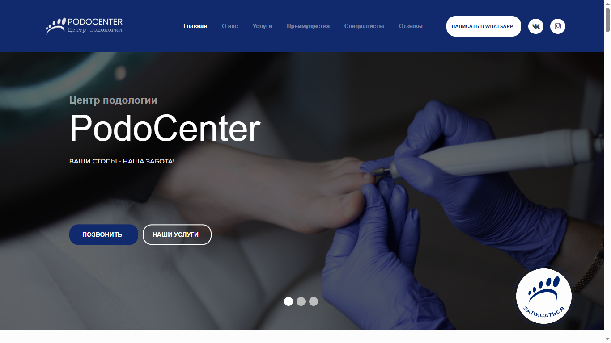

Ход работы
Анализ конкурентов
Поиск дизайна и конструкций сайта, подходящих сфере подологии. Обычно цветовая гамма варьируется в диапазоне от синего до зелёного
 Пример сайтаKiller фича
При проссмотре изображений из сферы подологии мне стало немного отвратительно. Сыграем контрасте запущенного случая и идеального результата
Оптимизация
Изображения
- Корректные названия файлов "female-podiatrist.jpg"
- Несколько размеров картинок
- alt атрибут на русском языке
- Использовать только WEBP и SVG форматы
Конструкция встраивания изображений
SEO
- H1 заголовок в единственном экземпляре на странице
- H-заголовки составлены из ключевых слов
- Древовидная структура заголовков